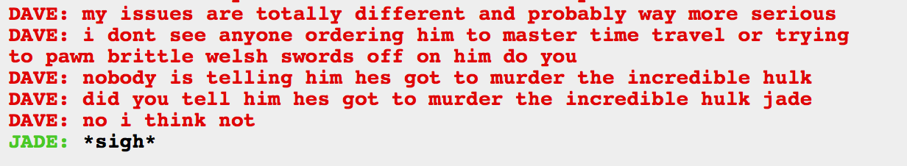

See Jade, this is what happens when you don’t motivate people properly! And also what happens when you are evil. And also what happens if you bring up an alternative version of someone and them blame the original version for what their alt did.
Seriously, Jade, you are fucking up everywhere here.